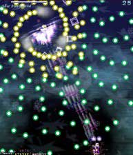
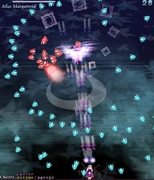
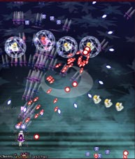

開幕のずら〜っと出てきた雑魚を倒した直後に出現する。
最初の赤・青弾は普通に弾の間を抜ければOKだけど、
その後の緑・黄色弾（画像の弾）は2つの弾に挟まれやすいので
弾と弾の間隔が広くなる瞬間を狙って抜けよう。
その後の雑魚は自機狙いの弾を撃ってきたりするけどeasyでは密度が薄いので簡単に避けれるかと。

同時に二列の弾を放つが、二列目の弾は一列目と少し弾道が違うため、
一列目を避けて安心してじっとしてると当たります。
アリスが逃げるときに落とす1UPアイテムは必ず取りましょう。
取りこぼしそうになったらボムを使ってでも無理やり取るべき。

雑魚がわんさか出て、自機狙いの弾、固定弾と色んな攻撃をします。
弾数が多いので、魔方陣の雑魚が出たら低速ショットで速攻撃破を狙うべき。
縦に赤い弾をズラーっと発射する敵が厄介なので何回か練習して出現タイミングを覚えておこう。